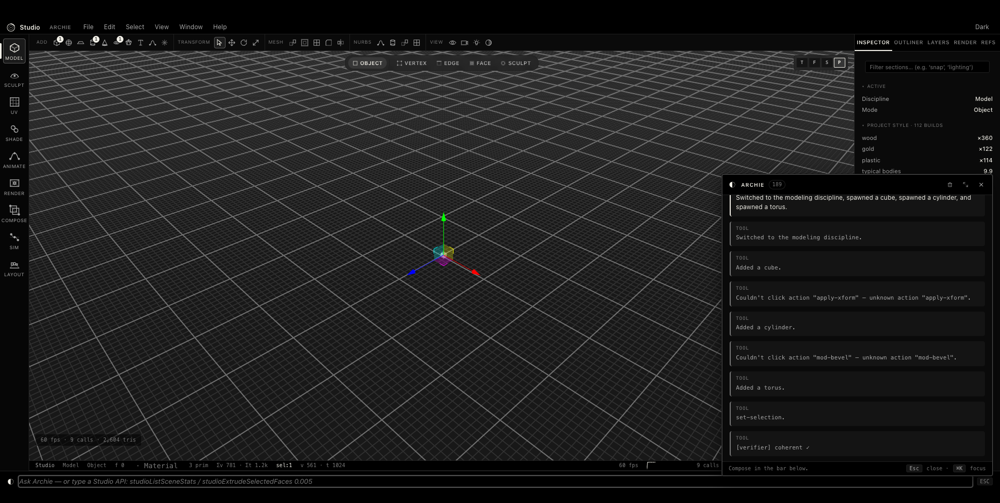

GO TO MARKET · MOTION
Let the dreamers in.
The teams follow.
A bottom-up motion:
free, frictionless adoption
by individuals becomes the wedge into studios and enterprises.
01
Frictionless entry
Free & local.
Dreamers, students and indie makers adopt with zero cost or friction.
→
02
Community & ClawComp
A builder community and competitions
seed the top of the funnel.
↗
03
Bottom-up to teams
Individual love
converts studios
; studios pull in enterprise.
↘
04
The flywheel
More makers →
a better Archie
→ better output → more makers.